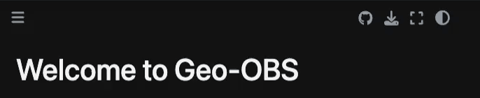

Welcome to Geo-OBS#

Operating Trilobite ocean bottom seismometers#
This manual is designed for students, as well as scientific and technical staff, who want to learn how to prepare, deploy and recover Trilobite ocean bottom seismometers (OBS) and how to process the recorded data.
About Geo-OBS#
Open access
Geo-OBS is open for everyone to follow online. It is meant as an open reference work for operating Trilobite ocean bottom seismometers in the field.
The instructions are given step by step and in great detail. Please follow each and every step precisely.
Course content#
Geo-OBS is split into several sessions:
Session 1: Setup of Hardware and Batteries
Session 2: Connecting the Trilobite and Start Data Collection
Session 4: Decoding and cleaning data (Downloading and Converting the Data, Chunking Files that are larger than 2 GB)
Session 5: Processing the Data with Python (binary header correction, x, y, z conversion, daily files, QC explorer)
Supplementary: Checklists
Learning outcomes#
After working through Geo-OBS, you will be able to:
✔️ Set up the hardware and charge the batteries of a Trilobite
✔️ Connect to the Trilobite and start a recording
✔️ Stop the Trilobite and correct the time after recovery
✔️ Download the RAW data and convert it into SEG-Y files
✔️ Display the recorded data
✔️ Process the data with Python: fix the binary header, convert to x, y, z and cut daily files
Project status#
Under construction
Geo-OBS is still being written. New chapters, pictures and videos are added continuously.
Contribute or improve the resource#
Notice an unclear section? A typo in the text? Get in touch!

Fig. 1 This page uses GitHub as a backbone. All it takes is a GitHub account. Once connected, feel free to open an issue, whether suggesting improvements or highlighting bugs.#
Funding and Support#
UNIS supports Geo-OBS by providing the instruments as well as technical and logistical assistance.
The development of Geo-OBS is funded by [NAME OF FUNDER / PROJECT, grant number].
Acknowledgements and licensing#
Geo-OBS is implemented through Jupyter Book and the Executable Book Project. Its structure is based on Geo-UAV. This work is licensed under a Creative Commons Attribution-NonCommercial 4.0 International License.